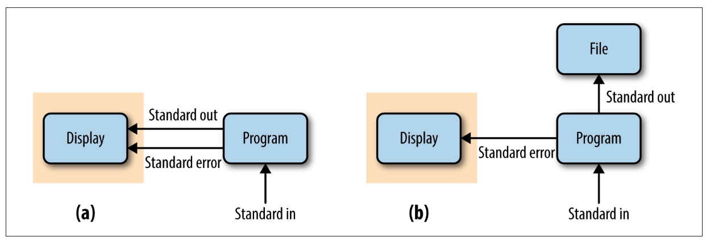

Advanced shell scripting-related material
while loops, arrays and more
![]()
1 Conditionals
With conditionals like if statements, you can run one or more commands only when a condition is met. You can additionally run a different set of commands when the condition is not met.
These features are especially useful in shell scripts. You may, for instance, want to check that all inputs are correct, and exit with an informative error if that’s not the case. While doing this adds complexity to your shell script, it can be worth it because:
- The sooner you stop a script from running when there are such problems, the better.
- If you pass erroneous input to the program that your script runs, you may get confusing errors or even worse, failure bot no clear error messages at all.
1.1 Basic syntax
This is the basic syntax of an if statement in Bash:
if <test>; then
# Command(s) to run if the condition is true
fiThe fi ending (equivalent to done in for loops) may seem peculiar but can be read either as short for “finish” or “if” in reverse order.
To run alternative command(s) when the condition is not met, add an else clause:
if <test>; then
# Command(s) to run if the condition is true
else
# Commands(s) to run if the condition is false
fiIn this example, you check the file type of an input file, and exit the script if it’s not of the correct type:
# [Hypothetical example - don't run this]
# Say we have a variable $filetype that contains a file's type
if [[ "$filetype" == "fastq" ]]; then
echo "Processing FASTQ file..."
# [Commands to process the FASTQ file...]
else
echo "Error: unknown filetype!"
exit 1
fiIn the code above, note that:
- The double square brackets
[[ ]]represent a test statement1. - The spaces bordering the brackets on the inside are necessary:
[["$filetype" == "fastq"]]would fail! - Double equals signs (
==) are common in programming to test for equality — this is to contrast it with a single=, which is used for variable assignment. - When used inside a script, the
exitcommand will stop the execution of the script. Withexit 1, the exit status of our script is 1: an exit status of 0 means success — any other integer, including 1, means failure.
1.2 String comparisons
The above test, "$filetype" == "fastq", was an example of a string comparison, where “string” is basically another term for “text” that is common in programming contexts, and mostly serves to distinguish this from numeric data. The two main string comparisons you can make are:
| String comparison | Evaluates to true (condition is met) if |
|---|---|
str1 == str2 |
Strings str1 and str2 are identical2 |
str1 != str2 |
Strings str1 and str2 are different |
1.3 Integer (number) comparisons
| Integer comparisons | Evaluates to true if |
|---|---|
int1 -eq int2 |
Integers int1 and int2 are equal |
int1 -ne int2 |
Integers int1 and int2 are not equal |
int1 -lt int2 |
Integer int1 is less than int2 (-le for less than or equal to) |
int1 -gt int2 |
Integer int1 is greater than int2 (-ge for greater than or equal to) |
It can be a good idea to test at the beginning of a script whether the correct number of arguments were passed to it, and simply exit if that’s not the case. The $# variable will automatically contain the number of arguments that were passed to a script:
# [Hypothetical example - don't run this]
if [[ ! "$#" -eq 2 ]]; then
echo "Error: wrong number of arguments"
echo "You provided $# arguments, while 2 are required."
echo "Usage: printname.sh <first-name> <last-name>"
exit 1
fiSay you want to run a program but the specifics of running it (e.g., some settings) depend on how many samples samples you run the program with.
With the number of samples determined from the number of lines in a hypothetical file samples.txt and stored in a variable $n_samples, you can test if the number is greater than 9 as follows:
# [Hypothetical example - don't run this]
# Store the number of samples in variable $n_samples:
n_samples=$(cat samples.txt | wc -l)
# With '-gt 9', the if statement tests whether the number of samples is greater than 9:
if [[ "$n_samples" -gt 9 ]]; then
# Commands to run if nr of samples >9:
echo "Processing files with algorithm A"
else
# Commands to run if nr of samples is <=9:
echo "Processing files with algorithm B..."
fi1.4 File tests
Finally, you can test whether files or dirs exist:
| File/dir test | Evaluates to true if |
|---|---|
-f file |
file exists and is a regular file (not a dir or link) |
-d dir |
dir exists and is a directory |
For example, the code below tests whether an input file exists using the file test -f and if it does not (hence the !), it will stop the execution of the script:
# [Hypothetical example - don't run this]
# '-f' is true if the file exists, so '! -f' is true if the file doesn't exist
if [[ ! -f "$fastq_file" ]]; then
echo "Error: Input file $fastq_file not found!"
exit 1
fi&& and || (Click to expand)
To test for multiple conditions at once, use the && (“and”) and || (“or”) shell operators — for example:
If the number of samples is less than 100 and at least 50 (i.e. 50-99):
if [[ "$n_samples" -lt 100 && "$n_samples" -ge 50 ]]; then # Commands to run if the number of samples is 50-99 fiIf either one of two FASTQ files don’t exist:
if [[ ! -f "$fastq_R1" || ! -f "$fastq_R2" ]]; then # Commands to run if either file doesn't exist - probably report error & exit fi
Exercise: Number of arguments
In your printname.sh script, add the if statement from above that tests whether the correct number of arguments were passed to the script. Then, try running the script consecutively with 1, 2, and 3 arguments.
Start with this printname.sh script we wrote above.
#!/bin/bash
set -euo pipefail
first_name=$1
last_name=$2
echo "This script will print a first and a last name"
echo "First name: $first_name"
echo "Last name: $last_name"Click for the solution
Note that the if statement should come before you copy the variables to first_name and last_name, otherwise you get the “unbound variable error” before your descriptive custom error, when you pass 0 or 1 arguments to the script.
The final script:
#!/bin/bash
set -euo pipefail
if [[ ! "$#" -eq 2 ]]; then
echo "Error: wrong number of arguments"
echo "You provided $# arguments, while 2 are required."
echo "Usage: printname.sh <first-name> <last-name>"
exit 1
fi
first_name=$1
last_name=$2
echo "This script will print a first and a last name"
echo "First name: $first_name"
echo "Last name: $last_name"Run it with different numbers of arguments:
bash scripts/printname.sh JelmerError: wrong number of arguments
You provided 1 arguments, while 2 are required.
Usage: printname.sh <first-name> <last-name>bash scripts/printname.sh Jelmer PoelstraFirst name: Jelmer
Last name: Poelstrabash scripts/printname.sh Jelmer Wijtze PoelstraError: wrong number of arguments
You provided 3 arguments, while 2 are required.
Usage: printname.sh <first-name> <last-name>Exercise: Conditionals II
In your Markdown notes file, write an if statement that tests whether the script scripts/printname.sh exists and is a regular file, and:
- If it is (
thenblock), report the outcome withecho(e.g. “The file is found”). - If it is not (
elseblock), also report that outcome withecho(e.g. “The file is not found”).
Then:
- Run your
ifstatement — it should report that the file is found. - Introduce a typo in the file name in the
ifstatement, and run it again, to check that the file is not indeed not found.
Click for the solution
# Note: you need single quotes when using exclamation marks with echo!
if [[ -f scripts/printname.sh ]]; then
echo 'Phew! The file is found.'
else
echo 'Oh no! The file is not found!'
fiPhew! The file is found.After introducing a typo:
if [[ -f scripts/printnames.sh ]]; then
echo 'Phew! The file is found.'
else
echo 'Oh no! The file is not found!'
fiOh no! The file is not found!2 While loops
In bash, while loops are mostly useful in combination with the read command, to loop over each line in a file. If you use while loops, you’ll very rarely need Bash arrays (next section), and conversely, if you like to use arrays, you may not need while loops much.
while loops will run as long as a condition is true. Such a condition can include constructs like read -r, which will read input line-by-line, and be true as long as there is a line left to be read from the file.
In the example below, while read -r will be true as long as lines are being read from a file fastq_files.txt — and in each iteration of the loop, the variable $fastq_file contains one line from the file:
# [ Don't run this - hypothetical example]
cat fastq_files.txtseq/zmaysA_R1.fastq
seq/zmaysA_R2.fastq
seq/zmaysB_R1.fastq# [ Don't run this - hypothetical example]
cat fastq_files.txt | while read -r fastq_file; do
echo "Processing file: $fastq_file"
# More processing...
doneProcessing file: seq/zmaysA_R1.fastq
Processing file: seq/zmaysA_R2.fastq
Processing file: seq/zmaysB_R1.fastqA more elegant but perhaps not as intuitive syntax variant uses input redirection instead of cat-ing the file:
# [ Don't run this - hypothetical example]
while read -r fastq_file; do
echo "Processing file: $fastq_file"
# More processing...
done < fastq_files.txtProcessing file: seq/zmaysA_R1.fastq
Processing file: seq/zmaysA_R2.fastq
Processing file: seq/zmaysB_R1.fastqWe can also process each line of the file inside the while loop, like when we need to select a specific column:
# [ Don't run this - hypothetical example]
head -n 2 samples.txtzmaysA R1 seq/zmaysA_R1.fastq
zmaysA R2 seq/zmaysA_R2.fastq# [ Don't run this - hypothetical example]
while read -r my_line; do
echo "Have read line: $my_line"
fastq_file=$(echo "$my_line" | cut -f 3)
echo "Processing file: $fastq_file"
# More processing...
done < samples.txtHave read line: zmaysA R1 seq/zmaysA_R1.fastq
Processing file: seq/zmaysA_R1.fastq
Have read line: zmaysA R2 seq/zmaysA_R2.fastq
Processing file: seq/zmaysA_R2.fastqAlternatively, you can operate on file contents before inputting it into the loop:
# [ Don't run this - hypothetical example]
while read -r fastq_file; do
echo "Processing file: $fastq_file"
# More processing...
done < <(cut -f 3 samples.txt)Finally, you can extract columns directly as follows:
# [ Don't run this - hypothetical example]
while read -r sample_name readpair_member fastq_file; do
echo "Processing file: $fastq_file"
# More processing...
done < samples.txtProcessing file: seq/zmaysA_R1.fastq
Processing file: seq/zmaysA_R2.fastq
Processing file: seq/zmaysB_R1.fastq3 Miscellaneous
3.1 More on the && and || operators
Above, we saw that we can combine tests in if statements with && and ||. But these shell operators can be used to chain commands together in a more general way, as shown below.
Only if the first command succeeds, also run the second:
# Move into the data dir and if that succeeds, then list the files there: cd data && ls data# Stage all changes => commit them => push the commit to remote: git add --all && git commit -m "Add README" && git pushOnly if the first command fails, also run the second:
# Exit the script if you can't change into the output dir: cd "$outdir" || exit 1# Only create the directory if it doesn't already exist: [[ -d "$outdir" ]] || mkdir "$outdir"
3.2 Parameter expansion to provide default values
In scripts, it may be useful to have optional arguments that have a default value if they are not specified on the command line. You can use the following “parameter expansion” syntax for this.
Assign the value of
$1tonumber_of_linesunless$1doesn’t exist: in that case, set it to a default value of10:number_of_lines=${1:-10}Set
trueas the default value for$3:remove_unpaired=${3:-true}
As a more worked out example, say that your script takes an input dir and an output dir as arguments. But if the output dir is not specified, you want it to be the same as the input dir. You can do that like so:
input_dir=$1
output_dir=${2:-$input_dir}Now you can call the script with or without the second argument, the output dir:
# Call the script with 2 args: input and output dir
sort_bam.sh results/bam results/bam# Call the script with 1 arg: input dir (which will then also be the output dir)
sort_bam.sh results/bam3.3 Standard output and standard error
As you’ve seen, when commands run into errors, they will print error messages. Error messages are not part of “standard out”, but represent a separate output stream: “standard error”.
We can see this when we try to list a non-existing directory and try to redirect the output of the ls command to a file:
ls -lhr solutions/ > solution_files.txt ls: cannot access solutions.txt: No such file or directoryEvidently, the error was printed to screen rather than redirected to the output file. This is because > only redirects standard out, and not standard error. Was anything at all printed to the file?
cat solution_files.txt# We just get our prompt back - the file is emptyNo, because there were no files to list, only an error to report.
The figure below draws the in- and output streams without redirection (a) versus with > redirection (b):

To redirect the standard error, use 2> 3:
ls -lhr solutions/ > solution_files.txt 2> errors.txtTo combine standard out and standard error, use &>:
# (&> is a bash shortcut for 2>&1)
ls -lhr solutions/ &> out.txtcat out.txtls: cannot access solutions.txt: No such file or directoryFinally, if you want to “manually” designate an echo statement to represent standard error instead of standard out in a script, use >&2:
echo "Error: Invalid line number" >&2
exit 14 Shell script options (vs. arguments)
It is also possible to make your shell script accept options. The example below uses both long and short options (e.g. -o | --outdir). It also uses a mix of “flag”-type options that turn functionality on/off (e.g. --no_gcbias) and options that accept arguments (e.g. --infile).
# Process command-line options
while [ "$1" != "" ]; do
case "$1" in
-o | --outdir ) shift && outdir=$1 ;;
-i | --infile ) shift && infile=$1 ;;
--transcripts ) shift && transcripts=$1 ;;
--no_gcbias ) gcbias=false ;;
--dl_container ) dl_container=true ;;
-h | --help ) script_help; exit 0 ;;
-v | --version ) echo "Version 2025-10-01" && exit 0 ;;
* ) echo "Invalid option $1" && exit 1 ;;
esac
shift
doneSuch a script could for example be run like so:
sbatch scripts/salmon.sh -i my.bam -o results/salmon --no_gcbiasThat’s more readable less error-prone than “anonymous” positional arguments. It also makes it possible to add several/many settings that have defaults. In contrast, when a script only takes positional arguments, all of them always need to be provided.
4.1 -z and -n
| String comparison | Evaluates to true if |
|---|---|
-z str |
String str is null/empty (useful with variables) |
5 Arrays
Bash “arrays” are basically lists of items, such as a list of file names or samples IDs. If you’re familiar with R, they are like R vectors4.
Arrays are mainly used with for loops: you create an array and then loop over the individual items in the array. This usage represents an alternative to looping over files with a glob. Looping over files with a glob is generally easier and preferable, but sometimes this is not the case; or you are looping e.g. over samples and not files.
Creating arrays
You can create an array “manually” by typing a space-delimited list of items between parentheses:
# The array will contain 3 items: 'zmaysA', 'zmaysB', and 'zmaysC'
sample_names=(zmaysA zmaysB zmaysC)More commonly, you would populate an array from a file, in which case you also need command substitution:
Simply reading in an array from a file with
catwill only work if the file simply contains a list of items:sample_files=($(cat fastq_files.txt))For tabular files, you can include e.g. a
cutcommand to extract the focal column:sample_files=($(cut -f 3 samples.txt))
Accessing elements in arrays
First off, it is useful to realize that arrays are closely related to regular variables, and to recall that the “full” notation to refer to a variable includes curly braces: ${myvar}. When referencing arrays, the curly braces are always needed.
Using
[@], you can access all elements in the array (and arrays are best quoted, like regular variables):echo "${sample_names[@]}"zmaysA zmaysB zmaysCYou can also use the
[@]notation to loop over the elements in an array:for sample_name in "${sample_names[@]}"; do echo "Processing sample: $sample_name" doneProcessing sample: zmaysA Processing sample: zmaysB Processing sample: zmaysC
Extract specific elements (note: Bash arrays are 0-indexed!):
# Extract the first item echo ${sample_names[0]}zmaysA# Extract the third item echo ${sample_names[2]}zmaysCCount the number of elements in the array:
echo ${#sample_names[@]}3
Arrays and filenames with spaces
The file files.txt contains a short list of file names, the last of which has a space in it:
cat files.txtfile_A
file_B
file_C
file DWhat will happen if we read this list into an array, and then loop over the array?
# Populate an array with the list of files from 'files.txt'
all_files=($(cat files.txt))
# Loop over the array:
for file in "${all_files[@]}"; do
echo "Current file: $file"
doneCurrent file: file_A
Current file: file_B
Current file: file_C
Current file: file
Current file: DUh-oh! The file name with the space in it was split into two items! And note that we did quote the array in "${all_files[@]}", so clearly, this doesn’t solve that problem.
For this reason, it’s best not to use arrays to loop over filenames with spaces (though there are workarounds). Direct globbing and while loops with the read function (while read ..., see below) are easier choices for problematic file names.
Also, this example once again demonstrates you should not have spaces in your file names!
Exercise: Bash arrays
- Create an array with the first three file names (lines) listed in
samples.txt. - Loop over the contents of the array with a
forloop.
Inside the loop, create (touch) the file listed in the current array element. - Check whether you created your files.
Click here for the solutions
- Create an array with the first three file names (lines) listed in
samples.txt.
good_files=($(head -n 3 files.txt))Loop over the contents of the array with a
forloop.
Inside the loop, create (touch) the file listed in the current array element.for good_file in "${good_files[@]}"; do touch "$good_file" doneCheck whether you created your files.
lsfile_A file_B file_C
References
Footnotes
You can also use single square brackets
[ ]but the double brackets have more functionality and I would recommend to always use these.↩︎A single
=also works but==is clearer.↩︎Note that
1>is the full notation to redirect standard out, and the>we’ve been using is merely a shortcut for that.↩︎Or if you’re familiar with Python, they are like Python lists.↩︎